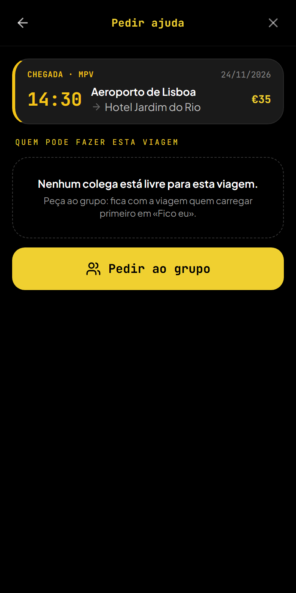
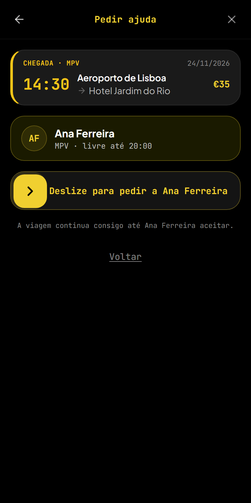
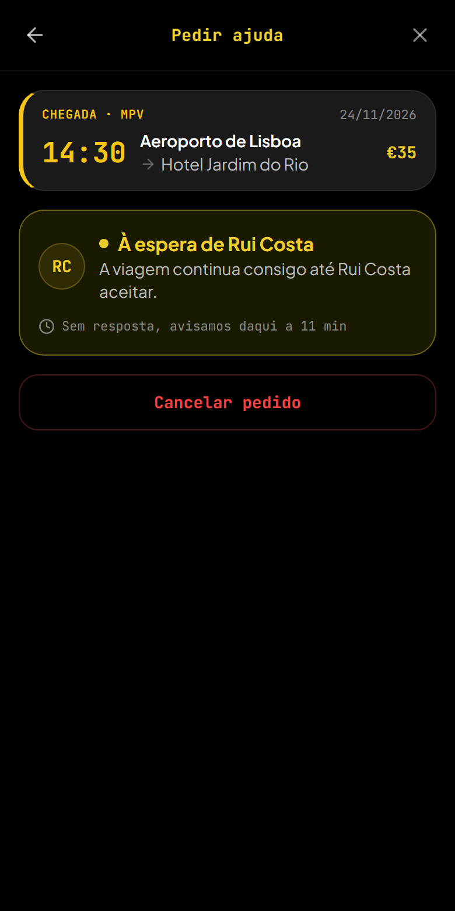
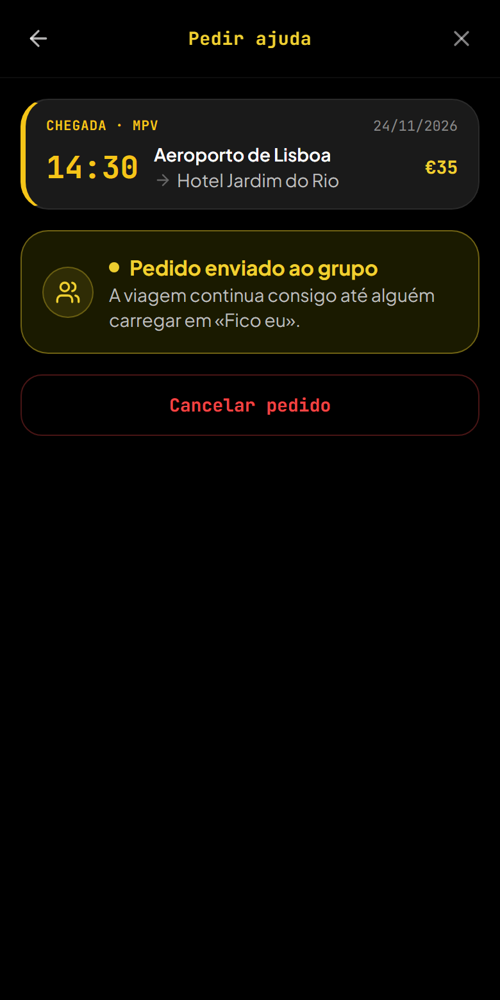
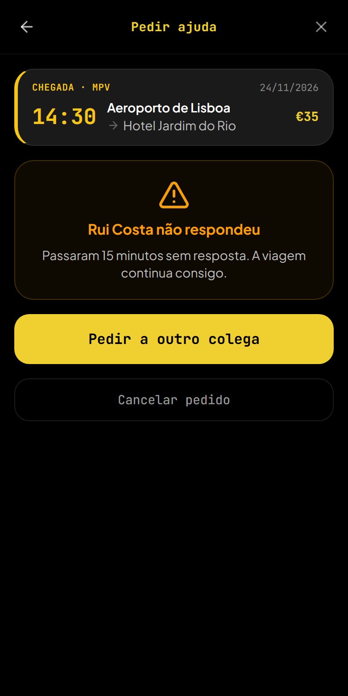
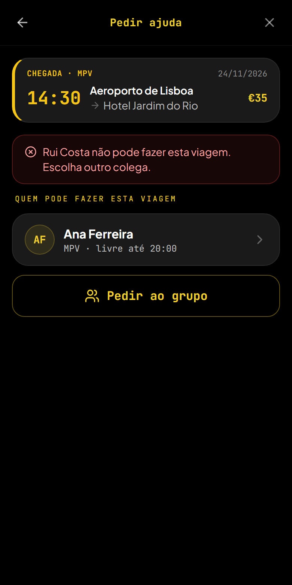

Ajuda entre motoristas — ecrãs
Ramo feature/ajuda-colegas · 23/11/2026 · telemóvel de 390 px. Nomes, viagens, voos, horas e valores são todos inventados.
As imagens desta versão (pedido 98) ainda não foram tiradas.
O computador tinha cerca de 800 MB de memória livre (é preciso 1 GB para arrancar o servidor local).
As imagens em baixo são da versão anterior (pedido 97) e já não mostram as decisões do Junior.
Para tirar as novas:
Para tirar as novas:
npm run dev e abrir /driver/ajuda-demo (todos os ecrãs lado a lado),
ou /driver/ajuda-demo?ecra=<id> para um só ecrã do tamanho do telemóvel.
Guardar cada imagem como imagens/<id>.png.
Ecrãs desta versão (pedido 98)
| id | Ecrã | Imagem |
|---|---|---|
O cartão da viagem | ||
01-cartoes | Pílula «Ajuda», «À espera · Rui», «Sem resposta», «Pedido ao grupo», «Aceite · a confirmar», «Passou para Ana»; a viagem acabada não tem botão | por tirar |
Quem pede | ||
02-escolha | Pedir ajuda: as duas escolhas no topo — «Pedir a um colega» e «Pedir ao grupo» | por tirar |
03-lista | A lista só com o nome e a categoria (viagem Sedan: aparecem Sedan, MPV e Business), sem horas | por tirar |
04-sem-colegas | Nenhum colega pode: só «Pedir ao grupo» | por tirar |
05-erro | Sem ligação: «Tentar outra vez» ou «Pedir ao grupo» | por tirar |
06-motivo | O motivo por escolher (Doente, Carro avariado, Atrasado, Outro): o deslizar fica parado | por tirar |
07-motivo-escolhido | Motivo escolhido: «Deslize para pedir a Ana Ferreira»; «Só a gestão vê o motivo» | por tirar |
08-motivo-grupo | Pedir ao grupo: motivo e «Deslize para pedir ao grupo» | por tirar |
09-espera | À espera do colega, contagem até aos 15 min e «Cancelar pedido» | por tirar |
10-espera-grupo | Pedido enviado ao grupo | por tirar |
11-grupo-a-confirmar | Grupo: «Um colega aceitou» — a viagem continua consigo até à confirmação dele | por tirar |
12-sem-resposta | 15 minutos sem resposta → «Pedir a outro colega» | por tirar |
13-aceite | Aceite: a viagem sai da lista | por tirar |
14-recusado | Recusado: volta à lista dos colegas, sem esse colega | por tirar |
Quem recebe — pedido a um colega (igual ao anterior) | ||
15-recebido | «Sim, faço» / «Não posso» | por tirar |
16-recebido-confirmar | «Sim, faço» → confirmar a deslizar | por tirar |
17-recebido-feito | A viagem é sua | por tirar |
Quem recebe — pedido ao grupo | ||
18-grupo | Rótulo, dia e hora, voo, de onde para onde, valor — e só «Aceitar» | por tirar |
19-reservada | «Reservada para si: confirme na mensagem que recebeu no WhatsApp», com «Tem até às 10:11 · faltam 7 min» | por tirar |
20-prazo-acabou | «O prazo acabou: o pedido voltou ao grupo», com «Aceitar» outra vez | por tirar |
21-outro-a-confirmar | Chegou depois: «Um colega já aceitou e está a confirmar» | por tirar |
22-ja-ficou | Chegou tarde: «Já ficou com um colega» | por tirar |
Entradas pelo link do WhatsApp | ||
23-link-grupo | /driver/trips?ajuda=<id> — abre o pedido do grupo com «Aceitar» | por tirar |
24-segunda | /driver/trips?ajuda=<id>&passo=confirmar — «Confirmo que faço esta viagem», a deslizar, com o prazo | por tirar |
25-segunda-feito | Segunda confirmação feita: a viagem é sua | por tirar |
26-segunda-prazo | Segunda confirmação tarde: «O prazo acabou: o pedido voltou ao grupo» | por tirar |
27-link-invalido | Link de um pedido que já não existe ou não é para si | por tirar |
Versão anterior (pedido 97) — desactualizada
Ficam só para comparar. Mudou: as duas escolhas no topo, a lista sem horas, o motivo, o voo no resumo e o grupo só com «Aceitar» e a segunda confirmação.










